M4 OSM analysis · Segmentation CSV · GIS KPI definitions/results · Dated KPI observations · Five primary KPI definitions
Use this evidence to prioritize validation
LTFRB register records, OSM route relations and DC Bus operational documents describe different populations. No cross-source route equivalence is asserted. Government labels and valid geometry do not establish current operations, stops, fares or travel times.
Five primary metadata KPIs: latest OSM snapshot
Every percentage uses its own stated numerator and denominator. Historical LTFRB trends and navigation eligibility: not verified. OSM comparisons are mapping snapshots, not service changes. Attribution: © OpenStreetMap contributors (ODbL).
Cleaned LTFRB baseline
Release 709ce26a035742a54735: 285 records, 266 linked IDs, 262 layers and 266 spatial features. These are distinct grains. 263 features pass structural checks; three remain quarantined. Network X-Ray and the verification workbench are future components, not M5 application features.
324 of 442 populated directions remain unresolved. The 128 explicit loop N/A slots are excluded from that denominator. No historical LTFRB trend or current service verification is inferred.
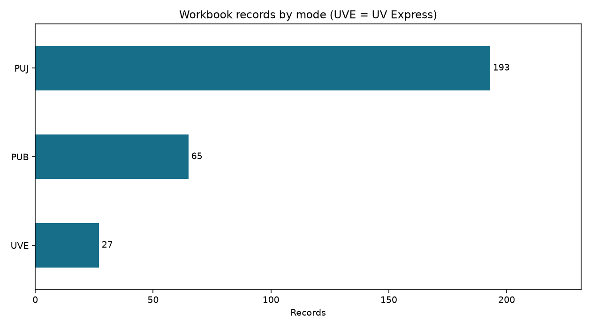
01 modes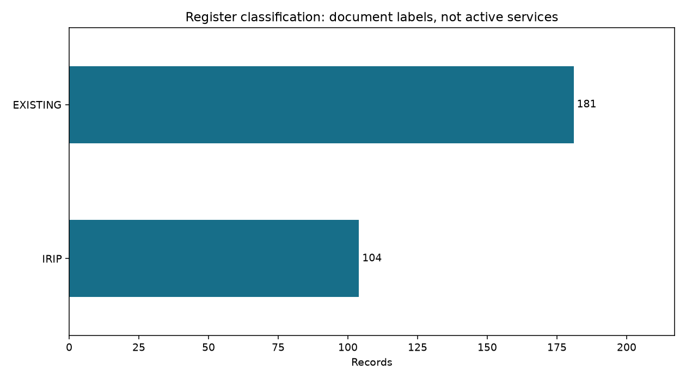
02 classification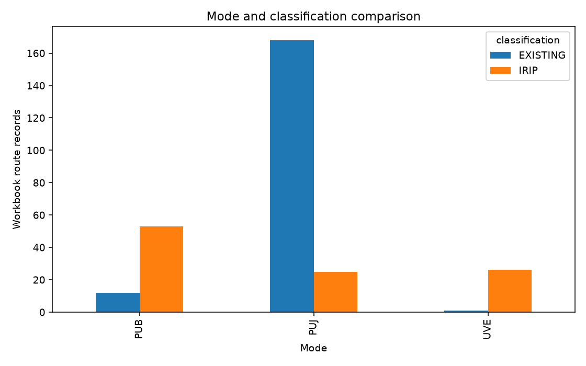
03 mode classification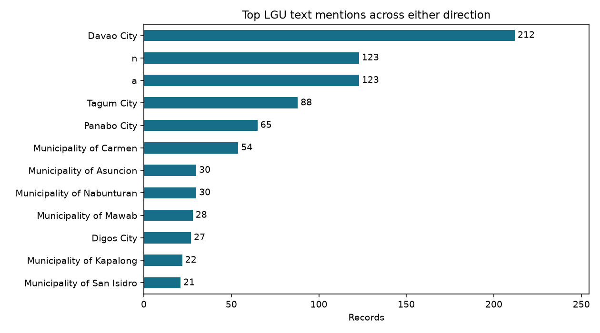
04 geography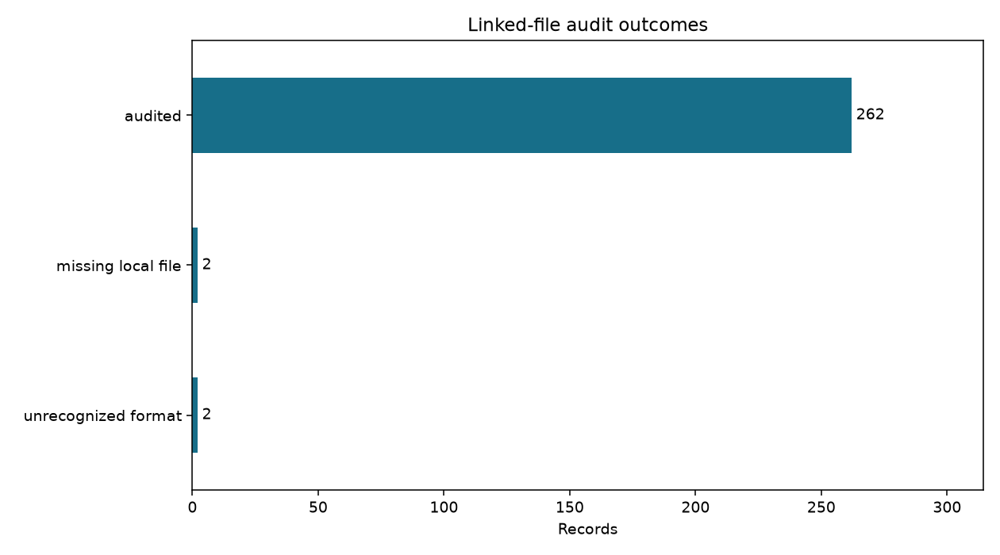
05 gis status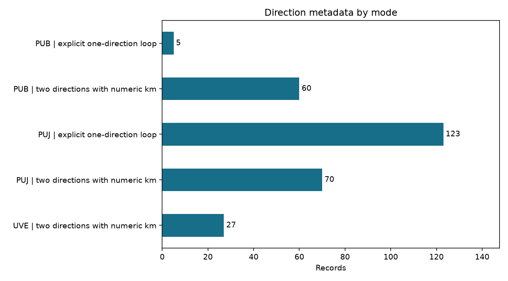
06 direction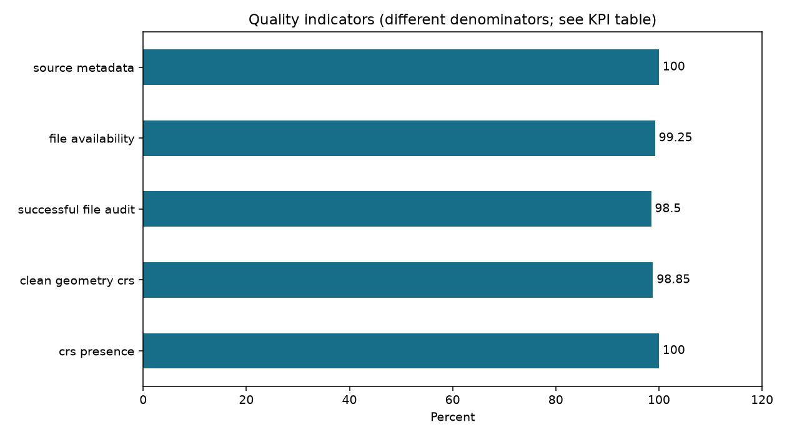
07 quality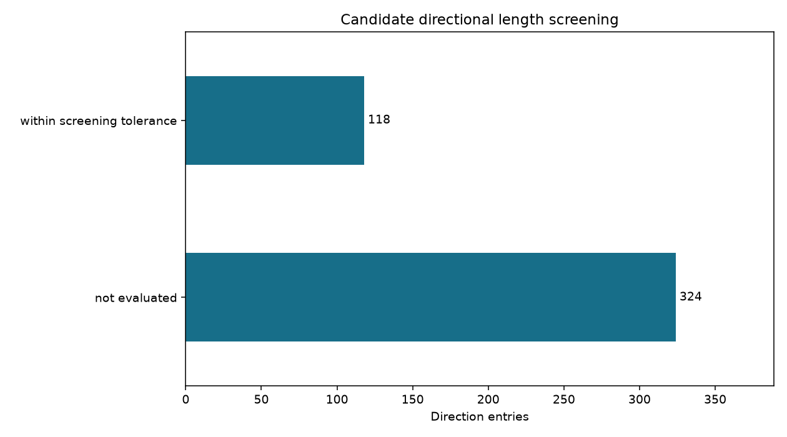
08 lengths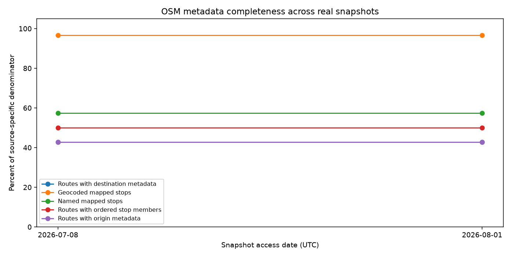
09 trends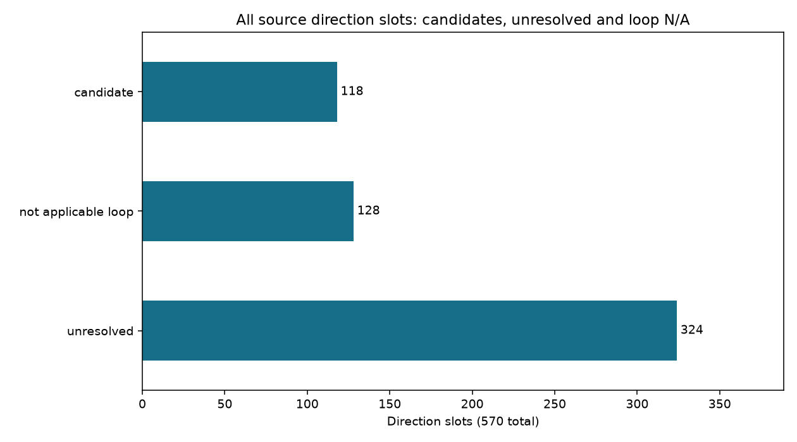
10 associations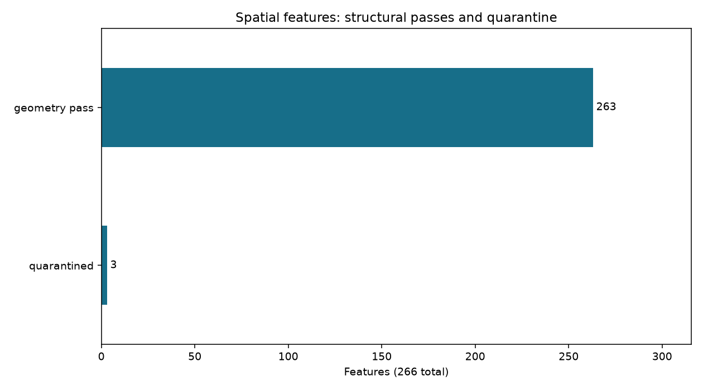
11 features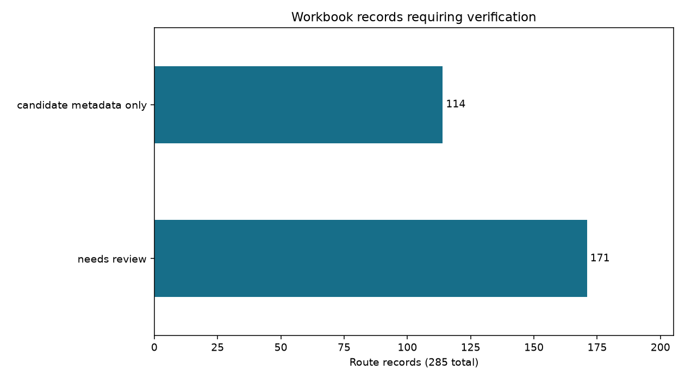
12 review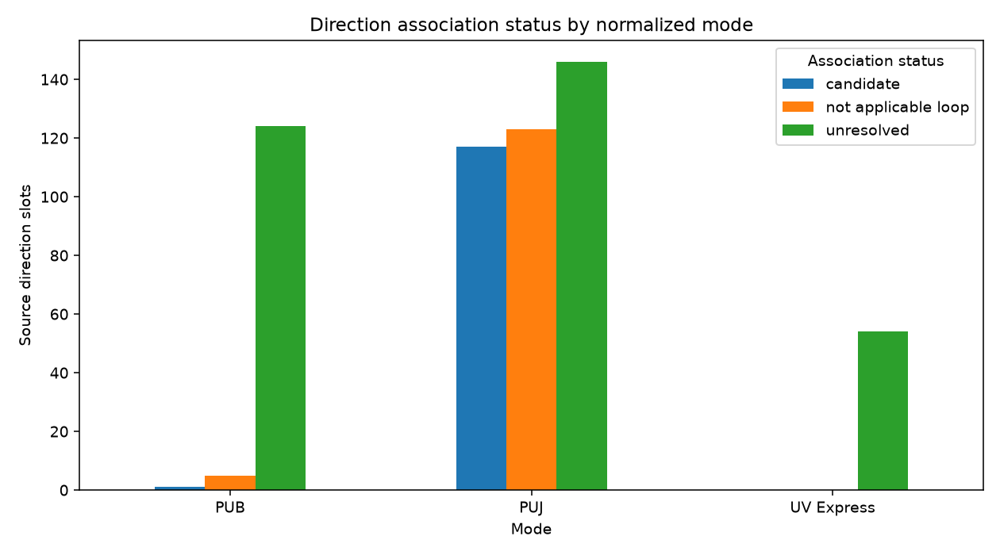
13 mode associations